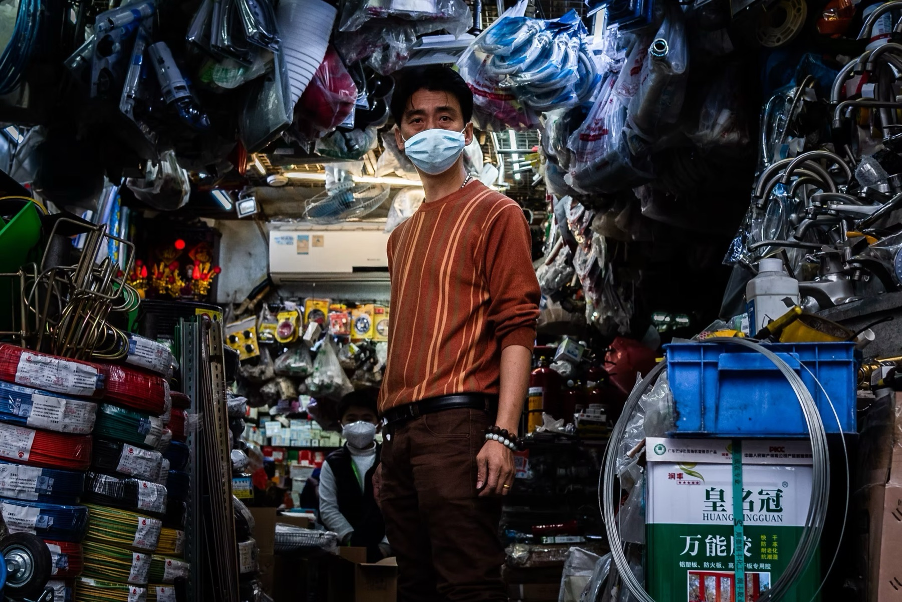
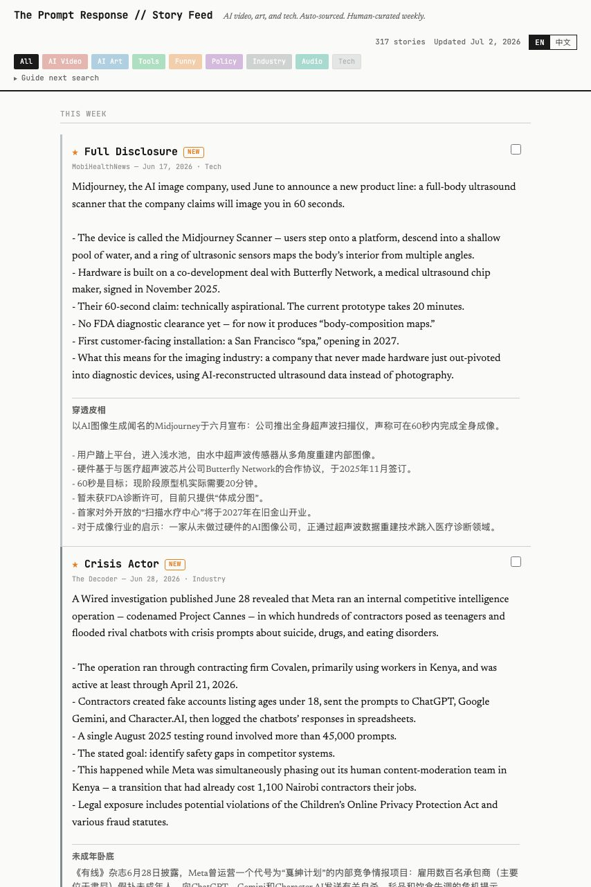
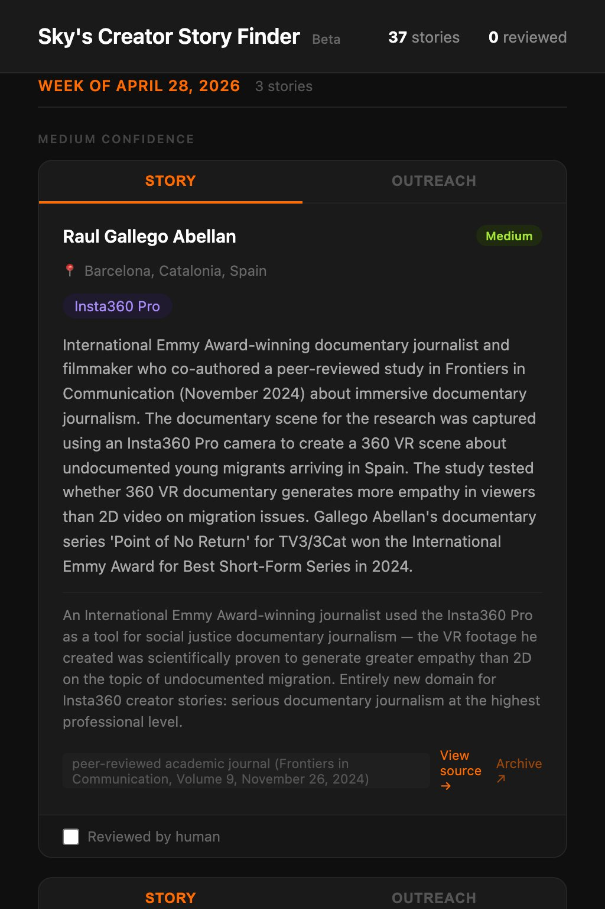

01This is Mine · Street shop01
Photography
50 frames · night · Shenzhen / LAFinalist Award · EyeShenzhen.com
This is Mine — selected for street photography
02Ping An, blue · Futian
03Arcs · Light installation
04Green · Portrait
05KK100 · Drone
06Dune · California
07Ping An, fog · Futian
08Singularity · Lobby
Click any frame to enlarge
See all 50
→
02
AI Projects
8+ built · 3 liveEditing timesaver8 HRS → 1 HR
Video Selects: Claude in the Edit Bay
Claude reviewed transcripts and shot logs to pull selects from raw footage — reducing a full day of manual logging to about an hour. The edit was assembled in Premiere and screened at Cinegear.

Active · 5+ issuesCOWORKERS SAVE TIME WITH AI
Prompt Response AI速写
A bilingual AI newsletter for Insta360's Shenzhen creative studio. I build each issue after work — testing prompts, seeing what actually holds up for me, and working out how the studio could use it. It's real time: at least a full workday's worth of effort spread across a week per issue.

Experiment(ALMOST) UBER-LOW-COST PRODUCT PHOTOS
AI Product Photography
As AI image models have improved, product photography has gotten dramatically easier. I built a makeshift studio in our office, shot every side of each camera, laid the angles out on one sheet, and fed that to the model alongside commercials whose look I wanted to borrow. For a 360 camera we're not quite there yet — but we're very, very close.


Live · Proof of conceptFASTER VETTING
Sky's Pre-Post
Built for the team managing influencer partnerships: it reviews creator videos faster, checks they meet FTC disclosure rules when the creator is paid, confirms the brand logo appears, and measures the video's tone. A proof of concept — and it worked.
It's live — have a look ↗Case studySALES INSIGHT
Sales Analysis: David
One of our best salesmen, David, was mic'd during a full trade-show day for an instructional video. On a lark, I asked Claude to transcribe the hours of footage and see if it could pull sales data from it. Surprisingly, it worked. And accurately. Claude turned what David did and said on the floor into a data-driven snapshot of his performance. The sales count came out correct, David found the results insightful — and he agreed with Claude's suggestion to frame the product around what it does for the customer. Apple is rumored to be working on a pendant that would record audio to do something similar. Simple and effective.

Live · Autonomous~HALF MY LEADS
Prompt Response Story Finder
Scans incoming newsletters, scores stories, writes bilingual EN/中文 summaries of the best ones, and pushes results to GitHub. It doesn't replace sourcing — it surfaces maybe half my leads, and I still dig out the rest myself — but it's a real head start. I've also fed it my writing and asked for first-draft blurbs. So far it can't match my wit or metaphor. The machines haven't won — yet.

Live · WeeklyRUNS EVERY SUNDAY
Insta360 Creator Story Finder
An autonomous weekly agent that finds undiscovered Insta360 creators before they go mainstream. Verified sources, checked against an exclusion list, published to a live page. No manual intervention.

Pipeline · 21+ creative nonfiction articlesTALES FROM THE FRONTIER YEARS
Shenzhen True-Crime EPUB Generator
中文长文→Starts with Chinese-language reporting — news write-ups and long-form web articles on old Shenzhen cases, most with no English version anywhere.
01
Source
Begin with a Chinese-language article — a news report or long-form web piece on a Shenzhen case. Many are semi-lost, recovered from cached pages.
02
Translate
Claude renders the Chinese into English with an eye to tone, not just literal words.
03
Review
A separate agent checks it paragraph by paragraph and rejects any translation that isn't up to snuff.
04
Illustrate
Relevant photos pulled from Wikimedia Commons; each book gets maps of streets I know well.
05
Assemble
English and 中文 laid side by side, packaged as an EPUB and sent to the Kindle.
After a few solid weeks of stories, the repeatable parts became a Python script.
KindleAA
One · 失踪事件
The Disappearances
Over the preceding months, the two of them had killed twelve young women between them — and cut the faces off their bodies. When the judgment was announced, some in the gallery cheered, some shouted curses, others wept in shock. The two killers sat the whole time with no expression on their faces. Their indifference was bone-chilling.
过去的数月间，他们共杀死了12名少女，还割去了她们的脸皮！判决宣布后，旁听席上有人在叫好，有人在斥骂，还有人激动地落了泪。可被判死刑的两名凶手，一直面无表情。他们的冷漠令人胆寒。
译自 zhihu.com · news.qq.com（原文已被屏蔽，据存档恢复）
Mass trial · Six Demoness case
马勇案9%
Read them nowFree · EPUB · Kindle-ready
03
The Ma Yong Serial Murders马勇案
Download ↓A mismatched couple, a fake job agency, twelve young women dead — the case English coverage called China's Jack the Ripper.
04
The Six Demonesses六魔女
Download ↓Beauty as bait — six young women lured drivers off the airport highway, and the killings gripped the whole country.
07
Gangxia First Blood第一血案
Download ↓Four dead in a rented Gangxia flat, one stabbed thirty-six times — the bloodiest case a Shenzhen prosecutor ever opened, unsolved for a decade.
16
The Sanhe Gods三和大神
Download ↓Work one day, drift for three — the day-laborers of the Sanhe market who dropped out of the race.
60
Sixty Days & Nights二奶村
Download ↓A reporter's sixty days undercover in Shenzhen's 'mistress village,' in the shadow of the Hong Kong border.
03
Writing
A selection — more in the archiveAward · Shenzhen Press Group · 深圳报业集团
Excellence in Journalism (优秀新闻奖) — for breaking coverage of a massive police raid, reporting for Shenzhen Daily

Investigation
Under Fire: How Easy Is It to Get a Gun in China?
The grey zones and black markets that supply China's gun buyers — reported from the seller side.
Ran in print. Never made it online — the censors saw to that. The PDF is the whole story.
Print only
Magazine PDF ↗Censored — print only

Breaking news
Hundreds Held in Police Raids, Tested for Drugs
Breaking coverage of a massive police operation sweeping Shenzhen's entertainment district — the story behind the Excellence in Journalism Award.
Won the Excellence in Journalism Award. Quoted by international press, including The Guardian.
Shenzhen Daily

Cover story
The Hukou's Human Cost
How the household-registration system traps millions — opening with the suicide note of four left-behind children.
That's Magazines

City feature
Dama Drama: Why Do People Hate China's Dancing Grandmas?
The first generation of lonely mothers in China's history — and the neighbors at war with their loudspeakers.
That's Magazines

Man on the street
The Street-Side Phone Seller
A day in the shadow economy with one of Shenzhen's informal mobile traders.
That's Magazines

Humor
Gotta Smoke? What Your Cigs Say About You
Five famous Chinese cigarette brands and what smoking them says about you.
That's Magazines
Humor
Bang for Your Buck: Cheap Dates
Romance on a budget in the world's hardware capital.
One of the most-read things I wrote. Also the most fun to write — the two are probably related.
That's Magazines
See 50 more articles→a selection across 8 sections